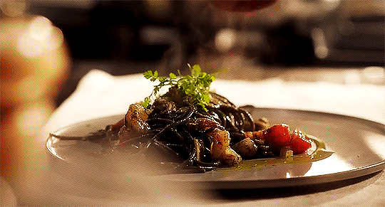
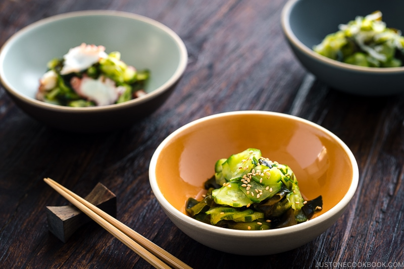

Odin Recipes

credit : sweet munchies
Shanghai-Style Braised Pork Belly
Korean Soybean Paste Stew

Japanese Cucumber Salad
Thai Sticky Rice
created for the odin project by ophellias


:max_bytes(150000):strip_icc():format(webp)/mango-sticky-rice-dessert-3217361-hero-02-9858904a67e944ed9b1b7c7a588dac6a.jpg)